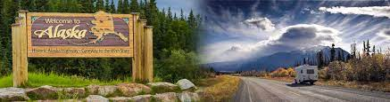

<!DOCTYPE html>
<html>
<head>
  <meta charset="utf-8">
    <title> my trip to alsaka</title>
    <link rel="styles.css">
  </head>
  <body>
</html>


<style>
#map{
  width: 100%;
  height: 400px;
  background-color: green;

}
<nav>
<nav>
  <ul>
    <li><a href="#">Navigation</a></li>
    <li><a href="#">Menu</a></li>
    <li><a href="#">Links</a></li>
  </ul>
</nav>
<script><html>
    <head>
        <script>
            function show(shown, hidden) {
                /* document.getElementById(shown).style.display='block';
                document.getElementById(hidden).style.display='none';
                return false;
            } */
        </script>
    </head>
    <body>
        <div id="Page1">
            Content of page 1
            <a href="#" onclick="return show('Page2','Page1');">Show page 2</a>
        </div>

        <div id="Page2" style="display:none">
            Content of page 2
            <a href="#" onclick="return show('Page1','Page2');">Show page 1</a>
        </div>
    </body>
</html>
function show(shown, hidden) {
  document.getElementById(shown).style.display='block';
  document.getElementById(hidden).style.display='none';
  return false;
}
</script>
</head>
<body>
<header>
<nav>
<ul>
 href="default.asp"> home</a></li>
<li><a href="news.asp">about</a>
</li>
 <li><a href="contact.asp">contact</></li>


</body>
</html>


</head>
<body>


<ul>
<li><a href="default.asp"> home</a></li>
<li><a href="news.asp">about</a>
</li>
 <li><a href="contact.asp">contact</></li>

</style>
<script>

img {
  border: 1px solid; /* black border*/
border-radius: 4px; /*rounded border */
 padding: 5 px; /* some padding */
 width: 150; /* set a small width*/
 /* add a hover effect (blue shadow) */
 img
}


<body>

<style>
<style="property:value;">
p {
  border: 2px solid powderblue;
}
</style>
</head>
<body="background-color:powderblue;">
<h1 style="background-color: pink;">My Trip To Alaska</h1>
<p style="color:orange;"></p>


<p>In 5 days i travelled the entire Alaskan Loop. i was not allowed to drive because the driver thought i would have an accident. We travelled from Williams Lake to beaver creek
it is one of the most scenic roadtrips i have been on. the first day we drove to chetwynd were we stopped for gas  across from the gas station was a little park with chainsaw art.
we fuelled up and left chetwynd  driving along a very scenic highway  and great views of mountains. next stop was fort nelson were the gas station atendant told the person driving to buy
an extra gas can cause there werent alot of service stations along the highway. she didnt about 20 miles outside of watson lake  the car was running low on fuel i told the driver to pull over and get some sleep because at that point shed ben driving for 10 hours. she did pull over but she put the car in neutral and started coasting down the long hills with no lights on trying to get to watson lake.
we made it to watson lake ther wasnt any gas station open an no hotels so we had to sleep in the car. the second day we fuelled up and got directions to our next destition but just outside of watson lake the driver fell asleep i had been asleep but i could hear gravel hitting the side of the car i woke up. i looked over and the driver was asleep i woke her up by that time we were getting close to the end of the guardrail she slammed the brakes on we must of done 10 360s before we stopped. at that point ahe was more concerned with getting the car started so she could find a phone. the seat i was in had twisted and i ended up with a sore back. she contuned to drive till we reached a little cafe in rancheria.
when we went it she went to use the phone i thought she was repoting what happened she didnt. i remember a truck driver asking if i was ok i wasnt. he offered to drive me back to watson lake to get help i didnt go. the driver said we were fine and we left. the ride to the next stop was the most painful ride ever. we finally made it to beaver creek were we stayed for the night.
the next day we drove to alska and picked up her grandson. on the way home we stopped at watson lake to see the signposts that was pretty cool. we then headed to dease lake were we spent the night. the next day we drove to jade town were we stopped at the jadestore we spent a couple hours there the jewellary was beautiful while the driver and her grandson looked around i went and sat on bench were and elder was sitting she shared her lunch with me and told me a lot about the surrounding area.

</body>
</p>

</body>
</html>
